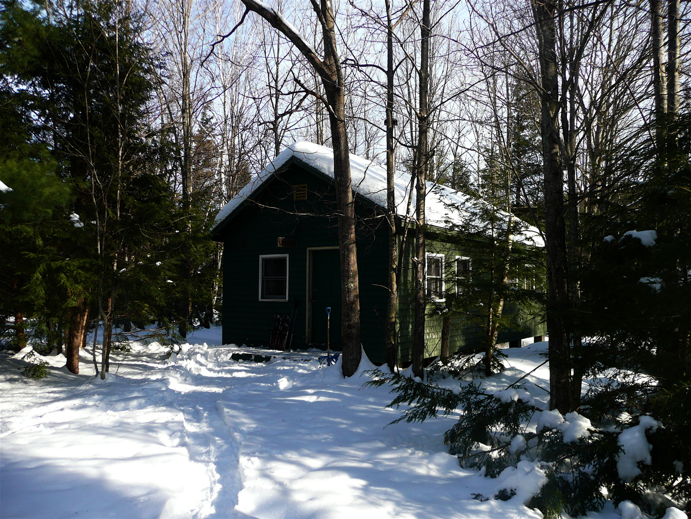

|
The
Winter Cabin |
|

Winter Cabin |
During the summer season the building known as the ‘Convent’ serves as quarters for the female crew members. In the 2008 - 2009 off-season – October 1st through April 30th - it is available as a ‘Winter Cabin’ rental.
The cabin is winterized and has an efficient woodstove to provide heat and, if need be, a cooking surface. There is electricity in the cabin and a small kitchen area. There are six bunks in the bunkroom. The kitchen is equipped with a microwave oven, a small refrigerator, a two-burner hot plate, a coffee maker, a toaster and a hot water kettle.
There is no running water during the off-season and guests have use of an outhouse located just to the north of the cabin. Guests must bring their own water, food, bedding and linens. Blankets, pillows and wood for the stove are provided.
In the winter, the driveway gates are locked, so a key is provided. A small area at the edge of 113 is plowed at the northern driveway entrance. The driveway is not plowed beyond this point.
Current rental rate is $50/night for the cabin. Payment in advance is requested.
Check our reservation calendar for the 2009 - 2010 winter cabin season:
If interested please contact the registrar for information and reservations. With confirmation of reservation, guests receive cabin instructions and where to pick up the key.
Meg Holland
Winter Cabin Registrar
603-692-6898
offseasonsignup@gmail.comLast Update 3/30/09